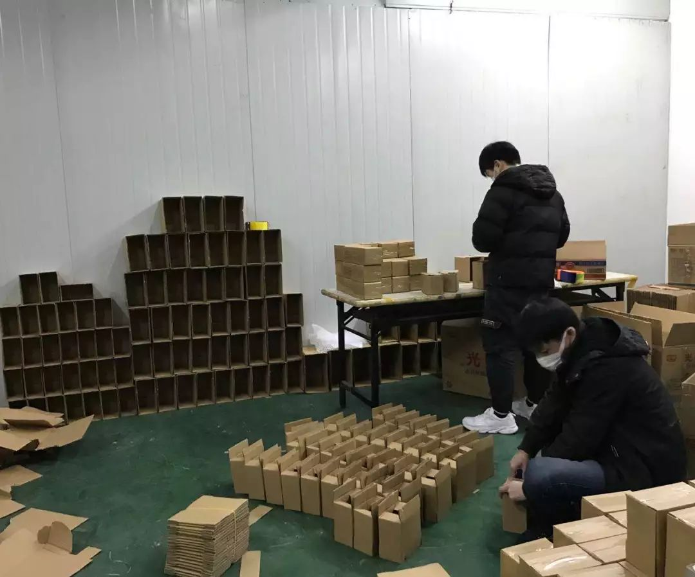

有序复工与做好防疫，一个都不能少！
原文链接 备份链接 _ 2月10日这个周一，中国多个省市迎来了春节后第一个工作日，虽然比原定假期已推迟一周，但政府、企业和个人所面临的疫情防控压力都不小。当前，湖北省仍需要着力抓好疫情防控，其他地区也需要做好防控的同时有序恢复生产 _ …
11.02.2020

本文字数：4000，阅读时长大约8分钟
导读：企业虽然很艰难，但目前要做的就是配合执行国家的各项要求，早日战胜疫情，企业能早日找到出路。
作者 | 第一财经 张苑柯
元宵节刚过，疫情之下第一批复工潮正式启动。与往年不同的是，伴随着对流动人员的监测要求，异地员工到岗前必须隔离多至14天，单位到岗率高低不等。
第一财经记者采访多家进出口生产企业发现，企业普遍反映防护装备物资存在短缺情况，保障员工健康安全存在挑战。义乌当地某服饰公司财务总监告诉记者，因为前期回公司的人员各自都在宿舍观察，企业并未正常运行。企业原有员工2500人左右，目前预计能有600人左右可于10日开工，可使四个厂区中的一个厂区开始进入生产状态。“当下的主要困难在于面临开工延期、工人短缺情况下导致的订单违约风险，目前已向商务局申请不可抗力证明并向客户做好解释工作。”该财务总监称。
某太阳能企业则表示，企业在疫情期间一直没有停工，但目前缺人是个难题，返厂员工住宿存在困难，也不能招聘新员工。还有企业表示，由于物流企业和供应商并没有完全复工，直接造成供应链紧张，加上出口收汇存在的问题，企业过关不易。
对中小企业而言，疫情下的复工面临重重挑战，企业主正在努力做好应对，寻求各种解决方案。

疫情中的创业者
温绵绵（化名）是一家宠物产品公司的创业者，1月22日她从武汉回到老家荆门，当其他省市的朋友问她是否需要口罩时，绵绵说：“先寄给武汉的朋友们吧，他们更需要。”
1月25日，她发现自己开始低烧咳嗽，伴随着腹泻。“没事的，先自己在家隔离吃药，我身体底子好，再说也不一定就中招了呢。”她安慰着家人和朋友。
1月26日，高烧39度的绵绵拿到医院CT检查单，结果显示两肺见多发散磨玻璃密度片影，边缘模糊不清。绵绵也终于忍不住向朋友们发出求助，荆门的物资告急，家里的消毒剂已经用完，口罩也只剩最后几只。
为了不传染给家人和他人，高烧的绵绵一直独自开车往返于医院和家中。29日，绵绵二次CT时“白肺”现象已经很明显，情况再度恶化的绵绵终于被医生安排了住院隔离，绵绵的父母也作为密切接触者被隔离。“住进医院我就放心了，平时我坚持健身，一定可以扛过去。”

▲温绵绵摄于湖北荆门
在接受记者采访时，绵绵的身体状况正在逐步好转，但依旧咳嗽不止。她表示，疫情对公司的发展肯定有较大的影响，很多原先制定好的年后工作计划基本都要调整，物流、线下渠道都在疫情下受到了比较大的影响。
由于目前新公司人不多，大家尽量节省开支，同时开展一些能够短期内“回血”的业务，帮助公司熬过这段非常时期。“好消息是，年前谈好的募资并没有黄，但销售工作就有点麻烦了。”绵绵说道，销售工作涉及员工出差，所以基本都取消了，但她相信疫情过后，公司业务很快能够步入正轨。
“身边的人一直在鼓励我，给我加油，这些对我来说是重要的。”她说。
王晓浒（化名）是一家主营线上食品和快消品销售公司的创始人，公司注册在上海。对他的公司来说，疫情带来的最大影响是仓库员工复工的问题。疫情重点地区的员工暂时回不来，回上海的员工则需要自我隔离一段时间。“线上销售最重要的就是发货时效性，而现在时效性无法保证。”他称。
其次，上半年的市场推广及整合营销的方案都需要更改，短期内大众对于广告的接触方式，如高铁、飞机、电影院等场景都已改变，“这相当于，年前投入的一些市场推广成本打了水漂。”
王晓浒认为，企业虽然很艰难，但目前要做的就是配合执行国家的各项要求，早日战胜疫情，企业能早日找到出路。仓库缺人的情况下，王晓浒的公司采取临时换岗制度，征用在上海未出沪的员工去仓库发货，同时给仓库员工配备口罩、消毒水、护目镜、手套等保护物品。作为过年前后未出过上海的“无病毒合格人员”，王晓浒今天第一个出现在了仓库。“员工回不来，我们一个人顶五个先用起来，再累也要保证市民的包裹准时投递。”他说。

▲王晓浒摄于上海仓库
怎么发工资是个难题
留学回乡的杭州人郑琛（化名）前不久刚将自己的公司以股权置换的形式卖给了一家国际企业，公司专做品牌管理、商务信息咨询以及网上的批发和零售，主要的收入来自咨询管理服务费和销售所得佣金。他告诉第一财经记者，公司的主要资产就是“人”，现在最大的挑战是客户不开工，就没有服务费可以收，而销售下滑导致佣金也大幅缩水。
“平时我们会估算仓库的周转率，为降低成本尽量做到不压货，现在则面临着库存里的货都卖光了补不到货，就算补到货也受到物流限制卖不动货。” 郑琛表示，已经有客户表示，非常时期根据不可抗力条款，暂停支付一个月的服务费。
由于公司是项目制的，员工人数取决于项目数目，服务费的报价包含了员工工资。服务费暂停，员工工资却需要正常发放，甚至在疫情期间远程工作的员工工资需要翻倍计算。好在郑琛的公司现金流还算稳定，目前尚无贷款，“撑到2月末问题不大，但3月开始可能就有些艰难了，”他称，“还好公司被收购了，实在不行还可以向总公司求助一下。”
现金流的问题虽然不用发愁，但是员工发工资却遇到了难题。郑琛告诉记者，公司国内员工69人，国外有700多名员工，现在公司大楼进不去，原本7号就该发出的工资至今还未发出。“现在是特殊时期，如果再不发工资，员工的日子更难过了。” 郑琛称，正在协调各方解决这一问题。
同样为发工资犯愁的还有做影视及视频媒体运营的陈挚（化名），他在南京的公司通过购买各种版权视频并进行剪辑和编辑，再将视频发行至各个新媒体平台赚取平台分成或广告费。
疫情来袭，上游方的素材版权方停止了供给，许多主播也减少了素材供应，能剪辑的内容减少了。加上正值2月淡季，人力本身就紧缺，疫情爆发后3倍工资也难以请到人，远程办公的效率只有原来的70%。而诸如直播、转码等需要在公司盯着的工作，目前也只能搁置。这都让陈挚看着干着急。
“最重要的是公司的现金流，我们一部分收入是从海外新媒体收取，银行网点缺人入账，我们等于没有收到这笔钱。但是工资依旧按翻倍计算，设备照样开着，水电房租一分都不能少。”陈挚表示，现在等着园区的复工通知，目前能做的就是“炒冷饭”，把以前的内容加工重新做一遍。
“有的员工已经提出辞职，还有个别员工不肯远程工作，也因为担心传染不肯回来。”陈挚坦言，疫情持续到现在深深感受国家的不容易。没有物资，口罩是他托关系自己背回家的，酒精是酿酒的邻居那讨来的，消毒液是养猪场朋友那里买的库存。
公司开销不断上升，园区要求公司物资齐全才能上班，在不断延期和等待通知中，陈挚整夜难眠。好在公司还有些储备，陈挚称只要能发工资就能安定人心，今年还是能大干一场。
暂时搁置的海外业务
“我们这个行业叫外贸综合服务业，简单讲就是给出口企业提供外贸的综合性服务，目前公司全球大约有170名员工，国内106名。”浙江某供应链服务公司负责人邓先生对第一财经记者表示，复工需要上报当地政府审批，作为当地第一批复工的企业，2月10日大约有42个工作人员到岗。
“其实我们在初六、初七就已经有一部分同事开始上班了，有些之前谈好的业务，包括年前出货周的期单寄送等都需要人提前操作。”邓先生表示，目前供应链的上下游都受到了疫情影响。
上游的工厂交期后推，并且可能连明确的交付时间也不能确定。“我预计，快的话，3月初有些工厂能够开始交付订单并出运货品。”
总的来看，邓先生认为行业面临几大挑战。
首先是合同风险。跟外商签的合同交期变更需要协商，比如找当地政府开具不可抗力的证明帮助解决违约问题。“市场是一环扣一环的，很多海外客户接了下游的订单，需要一些证明才能和他们的客户谈，好在政府很快给企业开具了不可抗力的证明，也帮助企业节省了沟通成本。还有的海外客户会主动慰问中国的合作企业是否需要物资上的帮助。”邓先生称，大多的海外企业很理解中国企业的处境，愿意协商调整合同，但也存在少数的直接取消合同的情况。
其次是货品出运挑战，在目前空运、海运和内陆物流滞缓的情况下，损失在所难免。邓先生坦言：“现在工厂已经做好的货走不掉，生产企业自身的销售受到影响，未能如约收货进行生产加工的企业也受到影响。”
第三是资金风险，包括合同变动导致客户付款无法到位、汇率波动、员工工资发放等。“细节流程中的难处，还有很多。”邓先生说。
这些挑战，在一季度可以撑一撑，邓先生担心，到了第二季度，可能很多海外企业也等不住了。“订单如果取消，订金退回的流程在国际贸易中是很严格的，还要承担汇率的风险。”另外，在原材料紧缺的情况下，涨价在所难免，企业的利润将进一步压缩。
艰难的环境下，邓先生表示，贸易企业积极应对很关键，不能因为疫情自暴自弃。
他建议，首先，可以通过主动的正式邮件、信息等方式告知所有客户中国疫情的状况。比如主要在湖北地区，政府已经采取延期工厂开工、学校开学的措施以减少传播，相关的治疗药物也在临床应用中，部分病人已经开始康复出院，相信疫情很快会得到完全控制。“这样做后，客户表示理解，甚至有人表示愿意捐赠口罩或者经费。”
对于已经签署采购和销售合同的订单，一方面要主动与工厂沟通复工条件，按照国家规定的复工时间，最快交货。同时，主动和客户沟通销售情况、库存储备情况，并主动告知可能延期交货时间区间，让客户有心里准备，并尽可能保持高频沟通，减少相互的影响。
对于年前由于物流拥挤未能出运的货物则需要尽快与货代确定时间发出，不要让成品积压在国内，影响客户销售。同时，做好提单等外贸单证寄送工作；查询出运物流信息同步于客户，关注提货动向；不要因为复工延期忘记或者没有落实好日常的工作，影响客户。
“另外要关注收款，对于异常情况要及时做信保报损或者催收；关注汇率，建议近半年的出口贸易可以考虑锁汇。”邓先生表示，企业还需要主动和准备来华的客人沟通，正在申请签证或者已经拿到签证的客户，需要请客户到中国大使馆沟通。关于修改入境时间，他建议改为3月之后。
与此同时，所谓“金三银四”，不应耽误新的一年人力资源优化和补充工作。各地可以通过视频、电话面试等方式和优秀的人才保持良好沟通，待复工后见面可以加快彼此的决策。
最后，对于复工后仍需要暂缓来公司的个别地区的同事，做好这期间薪资等方案的准备；安排好过渡期的工作，让员工安心，让业务流畅。


原文链接 备份链接 _ 2月10日这个周一，中国多个省市迎来了春节后第一个工作日，虽然比原定假期已推迟一周，但政府、企业和个人所面临的疫情防控压力都不小。当前，湖北省仍需要着力抓好疫情防控，其他地区也需要做好防控的同时有序恢复生产 _ …
原文链接 备份链接 经济观察报 记者 种昂 2月4日，一批5万只口罩由一辆货车缓缓运进了江苏某汽车配件工厂的大门，刘天元总算松了一口气。作为这家民企高管兼内部疫情防控的副总指挥，他肩负着企业复工的重担。此时，刘天元似乎看到了复工的希望。 …
原文链接 备份链接 _ 全国除湖北以外地区的确诊病例数增速连日放缓，让部分制造企业看到了希望，基于疫情防控的逐步进展，安全复工自救计划也开始酝酿 _ 文 |《财经》记者 张威 编辑 | 袁满 12个园区、1500家企业、近10万员工，总 …
原文链接 备份链接 *************▲*************广州街头，戴着口罩的行人。 （麦圈/图） 全文共2050字，阅读大约需要5分钟。 一场突如其来的疫情，给中国人带来近十年来最长的一个春节假期。随着2月10日的复 …
原文链接 备份链接 尽管防疫成本暂时可控，销售收入降低使不少企业依然面临现金流短缺的风险。短期内公司将如何应对？ _ 实习生 | 丁宁 记者 | 王晓珊 编辑 | 盛倩玉 沈小山 版式 | 韩佳芸 这个年，石青是在接连不断的电话会议中度 …